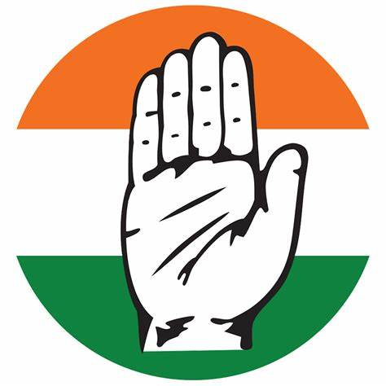

Madhya Pradesh Congress Sevadal
Home
About Us
History
Contact Us

|  |
Madhya Pradesh Congress Sevadal |
Home |
About Us |
History |
Contact Us |
|
|---|
In 1923, following the Flag Satyagraha at Nagpur, many activists of the Congress were arrested and sentenced to prison. Unable to tolerate the rigors of prison, most of them tendered written apologies to the colonial authorities. However, members
of the Hubli Seva Mandal, founded by N. S. Hardikar refused to yield. This uncompromising stance gained the attention of the Congress' national leadership that had gathered in Nagpur to participate in the satyagraha. It was here that the idea
of establishing an organisation of volunteers to combat the Raj was born. At the Kakinada session of the Congress in 1923, a board under Dr N S Hardikar was constituted for setting up the Dal. The Seva Dal was established as the Hindustani Seva
Mandal on 1 January 1924. According to the resolution at Kakinada, the Dal was to work under the supervision of the Congress party's working committee. Jawaharlal Nehru was its first president. The Dal faced much initial opposition from Congressmen,
who were opposed to the idea of creating a militia like organisation in the Congress, seeing it as a threat to the idea of civilian dominance and as being inconsistent with the idea of non-violence. Umabai Kundapur was the founding president of
the women's wing of the Dal. Kamaladevi Chattopadhyay was closely associated with the organisation, especially in the 1930s.
In 1931, the Congress Working Committee decided to rename the Hindustani Seva Dal as the Congress Seva Dal, making
it the central volunteer organisation of the Congress. Every province was to have a general officer commanding the provincial Seva Dal. The organisation also focused specifically on three categories of people: children, adolescents and adults.
All Seva Dal members were required to take an oath, which, among other things, required them to stay aloof from political activity in the Congress. RSS founder Dr. K.B. Hedgewar was also associated with the Congress Seva Dal's predecessor - Hindustani
Seva Dal The task of imparting training and organising volunteers was given to the Dal in 1938, which was then headquartered in the Karnatak district of the Bombay presidency. Under Hardikar, an academy for physical training was established and
training camps established at several places across India. During the Civil Disobedience Movement, the Seva Dal played an stellar role in enrolling new members in the Congress, organising activities like picketing and in arming the party with
an organised but peaceful militia. The significance of the Dal in the Civil Disobedience Movement can be gauged from the fact that in 1934, when the Movement came to an end and the colonial authorities lifted the ban on the Congress and its organisations,
they continued to proscribe the Dal.